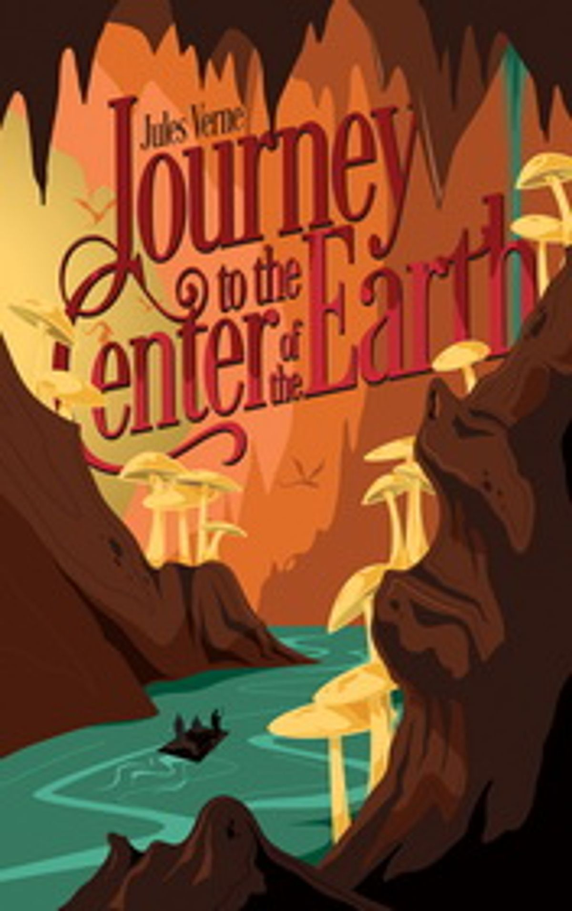

Bacaan
Terpilih
🌙 / ☀️

← Perpustakaan
Perjalanan ke Dalam Perut Bumi
Jules Verne
1864
Daftar Isi
Tentang Apa Buku Ini?
Profesor Dan Keluarganya
Sebuah Misteri Yang Harus Dipecahkan Dengan Segala Cara
Latihan Menulis Runik Profesor
Musuh Akan Dibuat Tunduk Kelaparan
Kelaparan, Lalu Kemenangan, Diikuti Oleh Kekecewaan
Diskusi Menarik Tentang Sebuah Perusahaan Yang Tak Tertandingi
Keberanian Seorang Wanita
Persiapan Serius Untuk Penurunan Vertikal
Islandia! Tapi Apa Selanjutnya?
Percakapan Menarik Dengan Para Ahli Islandia
Petunjuk Menuju Pusat Bumi
Tanah Gurun
Keramahan Di Bawah Lingkaran Arktk
Tapi Daerah Arktk Juga Bisa Tidak Ramah.
Snæfell Akhirnya
Dengan Berani Menuruni Krater
Penurunan Vertikal
Keajaiban Kedalaman Daratan
Studi Geologi Di Lokasi
Tanda-Tanda Pertama Kesulitan
Belas Kasih Menyatukan Hati Sang Profesor
Kegagalan Total Air
Air Ditemukan
Bagus Sekali, Tikus Tanah Tua! Apakah Kau Bisa Bekerja Di Tanah Secepat Itu?
De Profundis
Bahaya Terburuk Dari Semuanya
Tersesat Di Dalam Perut Bumi
Penyelamatan Di Galeri Berbisik
Thalatta! Thalatta!
Sebuah Induk Baru Internum
Persiapan Untuk Pelayaran Penemuan
Keajaiban Laut Dalam
Pertempuran Para Monster
Geyser Besar
Badai Listrik
Diskusi Filosofi Yang Tenang
Museum Geologi Liedenbrock
Profesor Itu Kembali Duduk Di Kursinya
Pemandangan Hutan Diterangi Oleh Listrik.
Persiapan Untuk Meledakkan Jalan Menuju Pusat Bumi
Ledakan Besar Dan Serbuhan Ke Bawah
Melaju Dengan Kecepatan Tinggi Melewati Kekerasan Yang Mengerikan
Akhirnya Terlempar Dari Gunung Berapi!
Negeri Cerah Di Laut Mediterania Biru
Semua Akan Baik-Baik Pada Akhirnya